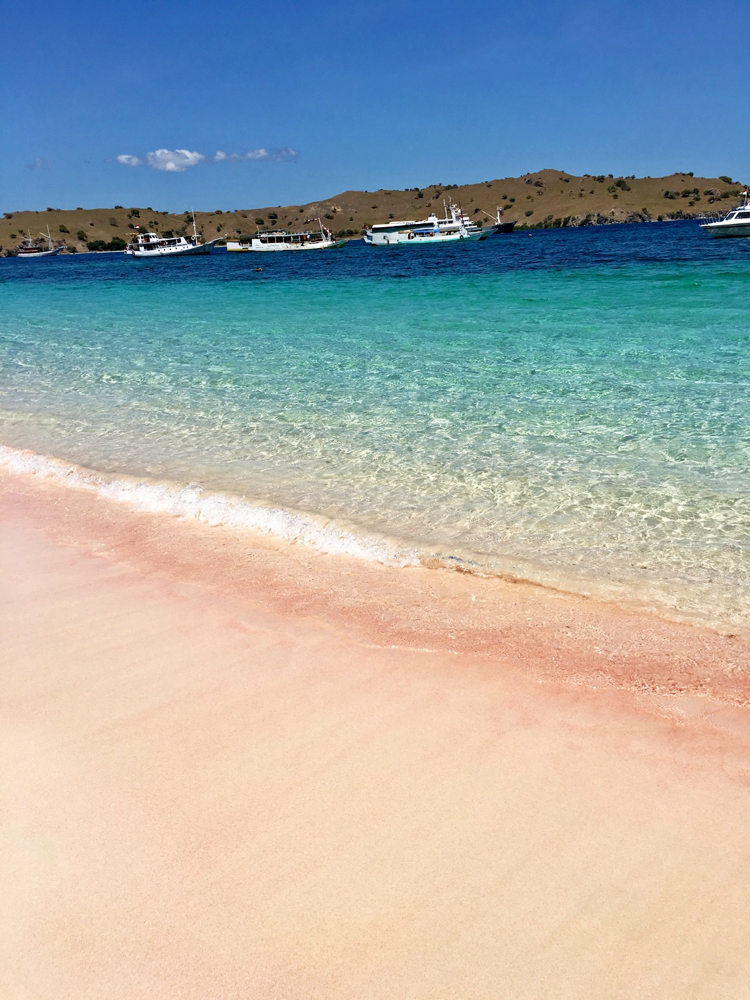

|  | Sesuai namanya, pantai ini menyuguhkan hamparan pasir pantai berwarna merah muda alias pink. Tak heran, pantai ini menjadi salah satu destinasi populer yang banyak dikunjungi wisatawan. Pink Beach (Pantai Pink) adalah pantai yang berada di cekungan bagian selatan Pulau Komodo. Tahukan kalian, warna merah muda pada pasir pantai tersebut berasal dari batuan koral yang hancur di lautan. Pada versi lain, pasir merah muda ini berasal dari hewan mikroskopik 'firaminifera' Selain menikmati keindahan pantai, wisatawan juga bisa melakukan kegiatan alam lainnya yang tak kalah asyik. Para pengunjung bisa mendaki tebing yang ada di sekitaran pantai. Dari atas tebing hijau ini, kalian bisa melihat sisi lain keindahan Pantai Pink dari ketinggian. Apalagi saat musim penghujan tiba. Letaknya yang tersembunyi dan jauh dari pusat kota membuat pantai ini terjaga keindahannya. Infrastruktur yang tidak memadai membuat anda harus menempuh perjalanan sekitar 2 jam dari kota Mataram dan ketika anda sampai di sana jangan harap akan menemukan warung atau penginapan. Oleh karena itu, disarankan anda membawa makanan dari kota dan kembali ke kota untuk menginap. |